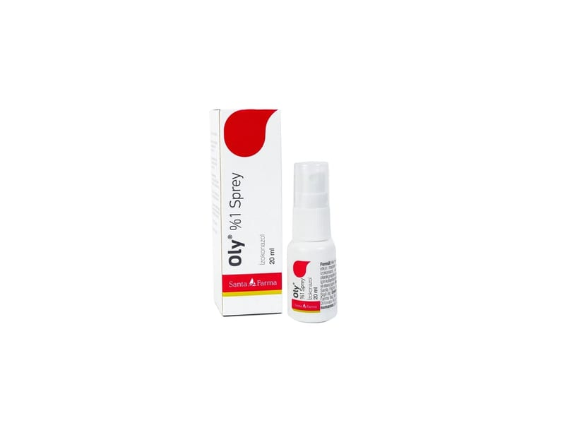

Oly % 1 Sprey, 20 ml

Ne için kullanılır
KT · Bölüm 1OLY®'nin 1 ml alkollü çözeltisi 10 mg izokonazol içerir. İzokonazol imidazol grubu olarak bilinen ve derinin mantar tedavisinde haricen kullanılan ilaçların bir üyesidir. OLY®deri üzerindeki mantarlara, mayalara, maya benzeri mantarlara (üst göğüs derisi ve kolların üst kısımlarında pullanma gösteren açık kahverengi lekelerle belirgin mantar enfeksiyonu nedeni organizmalar dahil) ve küflere ayrıca özellikle kasıklar, ayak parmak araları, koltuk ve meme altları ve testisler üzerinde ince kabuklaşma gösteren kırmızı veya kahverengi lekelerle belirgin bulaşıcı deri hastalığına (eritrazma) sebep olan organizmalara karşı da etkilidir.
OLY®berrak, homojen çözelti şeklindedir. Ürün karton kutuda 20 ml ve 50 ml çözelti içeren, beyaz, plastik koruyucu kapaklı, sprey pompalı HDPE şişede kullanıma sunulmaktadır.